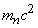

|
В. И. ЕЛИСЕЕВ ВВЕДЕНИЕ В МЕТОДЫ ТЕОРИИ
ФУНКЦИЙ ПРОСТРАНСТВЕННОГО КОМПЛЕКСНОГО ПЕРЕМЕННОГО |
|
9.2. Необходимые и достаточные условия для перехода соединения в проводящее и сверхпроводящее состояние.
Свободные электроны в кристалле определяют не только электрические свойства соединения, но также характеризуют его решетку. В металле возникновение свободных электронов тесно связано с параметрами решетки. В зависимости от параметров решетки для одного и того же металла изменяется величина внутренней полевой энергии, оцениваемая величиной среднего обменного кванта по всему объему кристалла. Эта величина определяет способность кристалла взаимодействовать с внешним энергетическим полем.
Рассмотрим 5-ти компонентное соединение
,
где М,Х,У,
Z,О –символы атомов или их изотопов, I,j,k,l,N- стехиометрические коэффициенты.Энергию связи электронов на внешних орбитах обозначим как
, гдеМассы атомных ядер обозначим как
.Обменный квант электрона с ядром атома
|
9.15. |
масса атомов подсчитывается по формуле (14).
Индекс
- энергия первой ионизации атома. Справочник .
Суммарный обменный квант всего соединения равен
|
9.16. |
где
Атомная масса кристалла
|
9.17. |
Величина среднего обменного кванта в объеме кристалла будет равна
|
9.18. |
Величина среднего обменного кванта дает возможность оценить вклад каждого компонента соединения в физико-химическую связь. Рассмотрим для этого разность между исходным обменным квантом каждого из компонентов с величиной среднего обменного кванта.
|
9.19. |
Система (19) дает спектр расположения каждого из компонентов относительно среднего обменного кванта.
Разность может быть положительной так и отрицательной. Сумма этих разностей распределится между компонентами соединения пропорционально их весовому полевому вкладу в общее энергетическое поле. Имеем
|
9.20. |
|
|
9.21. |
Энергия обменного кванта
|
9.22. |
Цифры 1, 0 обозначают обменный квант после первого цикла приближения относительно исходного 0 , который соответствует ионизационному потенциалу атома.
В результате электроны каждого компонента атома, входящего в соединения, имеют энергию связи равную величине
|
9.23. |
Энергии
принимаются за исходные и расчет повторяется до системы (22), которая уже будет после цикла иметь вид|
9.24. |
Энергия связи электронов на внешних орбитах после
цикла для каждого компонента выразятся в виде|
9.25. |
Система (24) определит минимальный обменный квант одного или несколько компонентов в
цикле, так как следующий цикл даст отрицательную величину. В результате будем иметь до пяти условий выхода из цикла в соответствии с количеством компонентов. Обозначим эти условияср1 Обменный квант одного из компонентов соединения меньше нуля.
ср2 Обменные кванты двух компонентов меньше нуля.
ср3 Обменные кванты трех компонентов меньше нуля.
Система выхода из цикла может дать одновременно ср4, ср5 и т.д. по количеству компонентов соединения. Расчет не ограничен количеством компонентов.
Возможен чисто технический выход из цикла, когда энергия связи электронов на орбите стремится к определенной величине и степень ее приближения сопоставима с точностью экспериментальных замеров энергии ионизации атома.
Различные соединения имеют и разные условия выхода из цикла по определению минимального обменного кванта, который реагирует на внешние энергетические полевые условия и этим определяются свойства соединения.
Условия ср1,ср2, ср3, ср4 …. являются, вследствие этого, критическими условиями, характеризующими свойства соединения.
Условия определяют концентрацию свободных электронов в зоне проводимости. Если выполняется условие ср1, то один из компонентов отдает свой электрон в зону проводимости. Если выполняется условие ср2, то два компонента отдают электроны в зону проводимости и т.д.
Свободные электроны определяют электрические свойства кристалла. Чем больше носителей электрического тока тем выше вероятность перехода кристалла в сверхпроводящее состояние.
Поэтому условия ср1,ср2, …. ,являются условиями характеризующими концентрацию носителей электрического тока.
Имея величины минимального обменного кванта в кристалле, величину энергии связи, которая отвечает этому обменному кванту, согласно формулам (24),(25), фактически определяется критический обменный квант внешнего воздействия, согласно формуле (4).
Соединения, которые содержат тяжелые элементы типа  с большими стехиометрическими коэффициентами имеют высокий начальный обменный квант и задают высокий шаг приближения в исходном цикле. В связи с этим необходимо в первом цикле использовать приближение в виде
с большими стехиометрическими коэффициентами имеют высокий начальный обменный квант и задают высокий шаг приближения в исходном цикле. В связи с этим необходимо в первом цикле использовать приближение в виде
|
9.24a. |
вместо (24).
В следующих циклах можно ввести учет весового вклада компонента в энергетическое поле соединения по формуле
|
9.24b |
вместо (24).
Где
Введение коэффициента
уменьшает шаг приближения в циклах, поэтому необходимо учитывать, что шаг приближения соизмерим с точностью вводимых расчетных параметров.Расчет показал, что этой формулой можно пользоваться при
Мэв. Шаг приближения в циклах является фактически технологическим параметром при металлургическом процессе изготовления сверхпроводников.Выполнение двух одновременно условий для
цикла в форме (24б) и (24), когда обменные кванты одного или несколько компонентов становятся меньше нуля определяют выход из цикла. А сами условия дают вилку по условиям ср1,ср2, …..Условия ср1,ср2,ср3,…. Являются НЕОБХОДИМЫМИ условиями при переходе соединения (сверхпроводника или проводника) из одного состояние в другое при внешнем воздействии.
Для различных соединений выполняются различные условия.
Расчет показал, что кроме этих НЕОБХОДИМЫХ условий в форме СР1,СР2,….. требуется ввести ДОСТАТОЧНЫЕ условия. Этими достаточными условиями являются ограничение по скорости отрыва электрона от атома и переход его в свободную зону.
По теории Друде скорость электронов в металле при комнатной температуре
Зоммерфельд рассмотрел электронный газ в металле как квантовый объект. Согласно его теории скорость

где
Согласно этой формуле скорость электронов равна
см/секСогласно НЕОБХОДИМЫМ условиям СР1,СР2,….. концентрация электронов в зоне проводимости кристалла или металла зависит от числа компонентов (или параметров решетки), у которых электроны перешли в зону проводимости.
Учитывая НЕОБХОДИМЫЕ условия а также формулу расчета обменного кванта кинетической энергии (9) получим
|
|
9.26. |

В формуле (9.26) знак суммы дает массу кристалла.
Усредненный обменный минимальный квант, определенный НЕОБХОДИМЫМИ условиями зависит от выполнения условий СР1,СР2,…..
Условия ср1,ср2,…… имеют свои усредненные обменные кванты, например если выполняется условие ср2 то в соответствии с формулами условий имеем
 и так далее для условий ср3,ср4,….
и так далее для условий ср3,ср4,….
В электронной теории твердого тела как первое приближение принято, что каждый атом отдает в общее пользование не менее одного электрона.
НЕОБХОДИМЫЕ условия уточняют это положение. В зону проводимости отдают электроны только те атомы, для которых выполняются условия СР1,СР,…
ДОСТАТОЧНЫЕ условия фиксируют изменение скорости электронов в зоне проводимости на порядок. Увеличивается концентрация носителей электрического тока и увеличивается их скорость. Сверхпроводимость есть увеличение концентрации носителей электрического тока с увеличением их скорости.
Мини оглавление:
[0], [1.1.1, 1.1.2, 1.1.3, 1.1.4, 1.1.5, 1.1.6, 1.1.7, 1.1.8, 1.2, 1.2.1, 1.2.2, 1.2.2.a, 1.2.2.b, 1.2.2.c, 1.2.2.d, 1.2.2.e, 1.2.2.f, 1.2.2.g, 1.2.2.h, 1.2.3, 1.3.1, 1.3.2, 1.3.3, 1.3.4, 1.3.5, 1.3.6, 1.4.1, 1.4.2, 1.5, 1.6, 1.7.1, 1.7.2, 1.7.3.1, 1.7.3.2, 1.7.3.3, 1.7.4.1, 1.7.4.2, 1.8.1], [2.1, 2.2],[3.1, 3.2, 3.3, 3.4.1, 3.4.2, 3.4.3, 3.4.4, 3.4.5],[4.1, 4.2, 4.3, 4.4],[5.1, 5.1.Рис.52, 5.2, 5.3, 5.4, 5.4.Т1, 5.4.Т2, 5.4.Т3, 5.5.1, 5.5.2, 5.5.3, 5.5.4],[6.1.1, 6.1.2, 6.2.1, 6.2.2, 6.2.3, 6.2.4, 6.2.5, 6.3, 6.4.1, 6.4.2, 6.5.1, 6.5.2],[7.1, 7.2, 7.3, 7.4, 7.5, 7.6, 7.7.1, 7.7.2, 7.8.1, 7.8.2, 7.8.3, 7.9],[8.1, 8.2.1, 8.2.2, 8.3, 8.4, 8.5, 8.6, 8.6.T1, 8.7, 8.8.1, 8.8.2, 8.8.3, 8.9.1, 8.9.2, 8.9.3, 8.10, 8.10.T2, 8.10.T3],[9.1, 9.2, 9.3, Рис.88, 89, 90, 91, 92, 93, 94, 95, 96, 97, 98, 99, 100],[10.1, 10.2, 10.3, 10.4, 10.5, 10.6, 10.7, 10.8, 10.9, 10.10, 10.11, 10.12, 10.13, 10.14, 10.15.1, 10.15.2, 10.16.1, 10.16.2, 10.17, 10.18],[11]
Размещенный материал является электронной версией книги: © В.И.Елисеев, "Введение в методы теории функций пространственного комплексного переменного", изданной Центром научно-технического творчества молодежи Алгоритм. - М.:, НИАТ. - 1990. Шифр Д7-90/83308. в каталоге Государственной публичной научно-технической библиотеки. Сайт действует с 10 августа 1998.
E-mail: mathsru@gmail.com